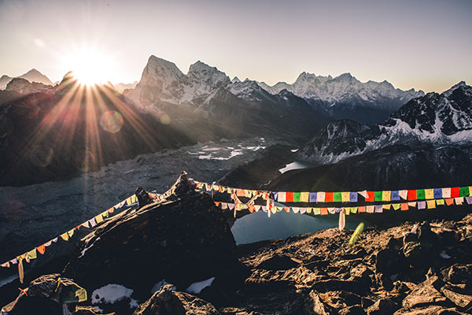
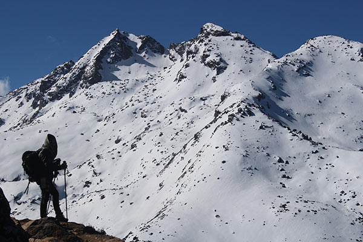
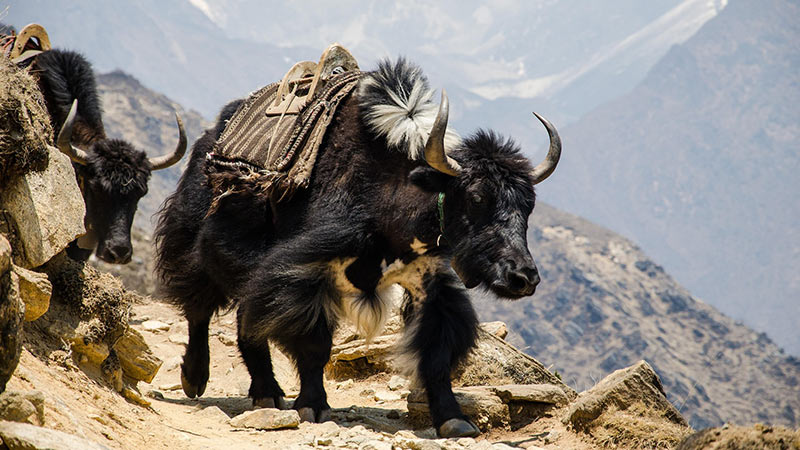
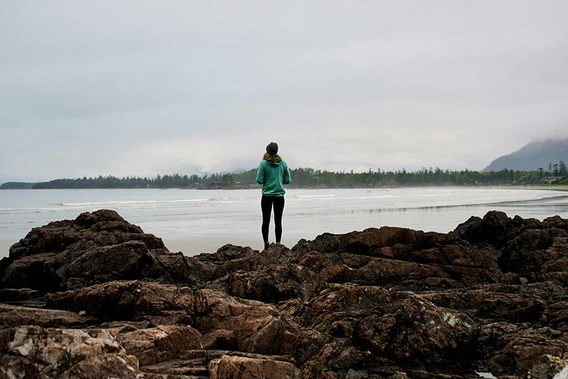
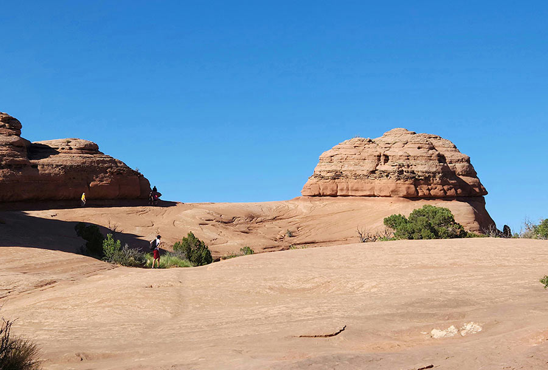
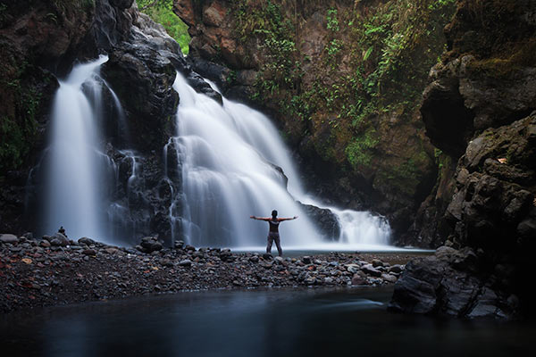

Where will you go next?
Discover Our Destinations
Every destination has its own landscapes, traditions and way of life. Our guided hiking adventures take you beyond the popular tourist routes and into places where nature and culture come together.

Nepal
Himalayan Adventures
Nestled between India and China, Nepal is home to nearly 31 million people and eight of the world's ten highest mountains, including Mount Everest. Despite its relatively small size, the country offers an incredible variety of landscapes, from lush subtropical forests to snow-covered Himalayan peaks. Visitors are welcomed with warm hospitality, vibrant markets, colourful festivals, and a rich cultural heritage shaped by both Hinduism and Buddhism.
Nepal is one of the world's premier hiking destinations, offering everything from gentle day hikes to legendary multi-week treks through the Himalayas. Trails pass through traditional mountain villages, ancient monasteries, terraced farmland, and breathtaking alpine scenery. Whether you're trekking to Everest Base Camp or exploring the Annapurna region, every journey combines spectacular natural beauty with authentic cultural experiences that make Nepal an unforgettable destination.
Explore Nepal
Iceland
Fire and Ice
With a population of just under 400,000 people, Iceland is one of the world's most unique travel destinations. Known as the Land of Fire and Ice, it combines active volcanoes, massive glaciers, geothermal hot springs, black sand beaches, and spectacular waterfalls. Its untouched landscapes and dramatic scenery create an unforgettable experience for every visitor.
Iceland offers hiking adventures unlike anywhere else on Earth, with trails winding through volcanic valleys, lava fields, glacier landscapes, and steaming geothermal areas. Popular routes such as the Laugavegur Trail reveal colourful mountains, natural hot springs, and endless panoramic views, making every journey a truly extraordinary outdoor experience.
Explore Iceland
Peru
The Andes Mountains
Peru is home to around 35 million people and is renowned for its rich history, diverse cultures, and breathtaking Andean landscapes. From the ancient city of Cusco to the world-famous ruins of Machu Picchu, visitors experience a fascinating blend of Indigenous heritage, colonial architecture, and vibrant local traditions.
Peru is a world-class destination for mountain trekking, with trails crossing the spectacular Andes and leading through remote valleys, alpine lakes, and ancient Inca paths. Whether hiking the famous Inca Trail or exploring lesser-known routes, travellers are rewarded with incredible mountain scenery, archaeological wonders, and authentic cultural encounters.
Explore Peru
Norway
Majestic Fjords
Norway is famous for its dramatic fjords, towering mountains, and untouched wilderness. Home to around 5.6 million people, the country offers some of Europe's most spectacular natural scenery, from cascading waterfalls and deep blue fjords to glaciers and Arctic landscapes. Its strong outdoor culture and peaceful atmosphere make it an ideal destination for nature lovers.
Norway offers unforgettable hiking experiences through iconic destinations such as Trolltunga, Preikestolen, and the Lofoten Islands. Well-maintained trails lead hikers past crystal-clear lakes, steep mountain peaks, and breathtaking viewpoints overlooking the fjords. Whether you're exploring a coastal trail or trekking in the high mountains, every hike showcases Norway's extraordinary natural beauty.
Explore Norway
Morocco
The Atlas Mountains
Morocco is home to approximately 39 million people and offers a captivating mix of ancient cities, colourful markets, vast deserts, and rugged mountain landscapes. Rich in history and culture, the country blends Arab, Amazigh, and African influences to create a unique travel experience filled with warm hospitality and unforgettable traditions.
The Atlas Mountains provide exceptional hiking opportunities through dramatic valleys, traditional Amazigh villages, and rugged mountain peaks. Trails reveal stunning scenery, terraced farmland, and authentic local life, allowing visitors to experience Morocco's natural beauty while discovering one of North Africa's most fascinating mountain regions.
Explore Morocco
New Zealand
Southern Alps
Home to around 5.4 million people, New Zealand is celebrated for its breathtaking natural landscapes, from pristine beaches and lush forests to towering alpine peaks. The country's commitment to conservation and outdoor recreation has made it one of the world's premier destinations for adventure travellers and nature enthusiasts.
The Southern Alps offer some of the finest hiking experiences in the Southern Hemisphere, with trails leading through snow-capped mountains, turquoise glacial lakes, and ancient beech forests. Whether exploring the Routeburn, Milford, or Hooker Valley tracks, every hike showcases New Zealand's extraordinary scenery and world-renowned wilderness.
Explore New ZealandCulture matters
More Than Beautiful Landscapes
Every destination has been carefully selected for more than its scenery. Along the way you'll meet local people, experience traditional food, learn about regional customs and gain a deeper understanding of the places you visit.
Whether you're drawn to snow-covered peaks, volcanic landscapes, deep fjords or ancient mountain trails, every adventure offers a chance to explore responsibly while creating lasting memories.
Our experienced local guides bring each destination to life with stories, knowledge, and a passion for the outdoors. Small group sizes ensure a more personal experience while respecting nature and local communities.
We believe great adventures should leave a positive impact. By supporting local businesses and promoting sustainable travel, every journey helps protect these remarkable destinations for future generations.